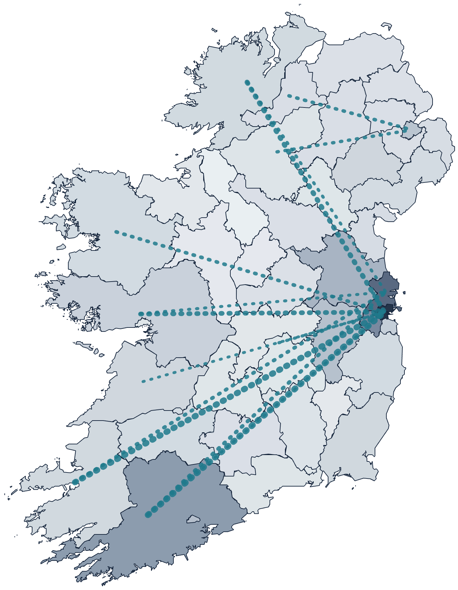
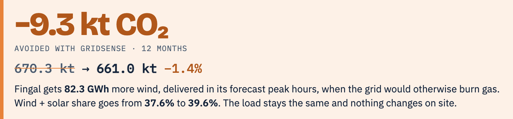
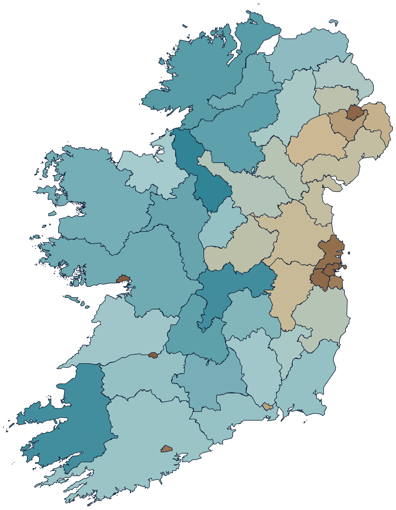
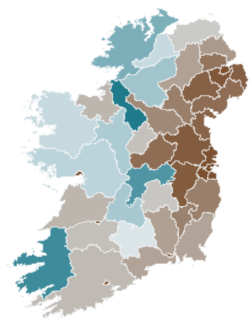
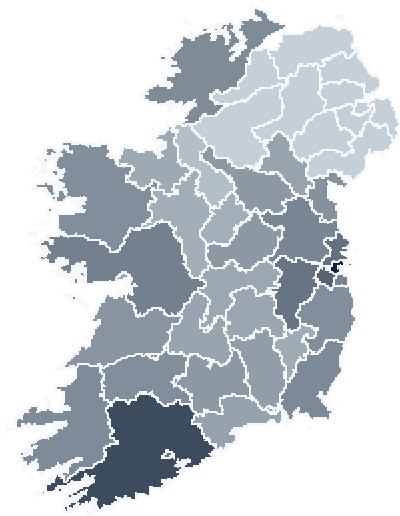
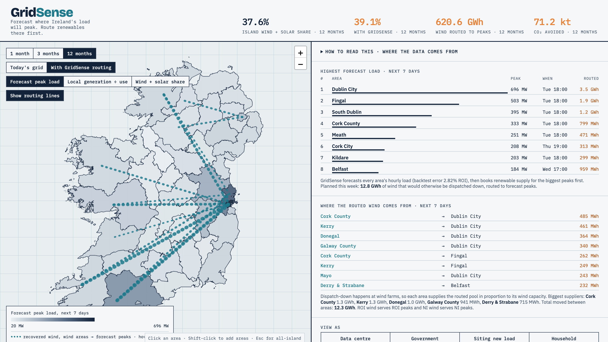
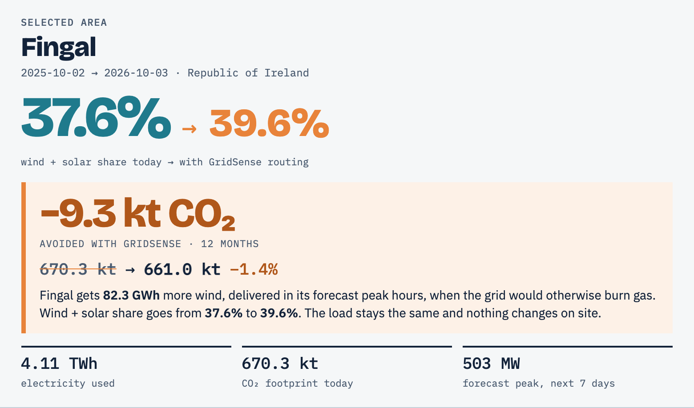

Hackathon 2026 · EirGrid + CSO open data
GridSense
Forecast where Ireland's load will peak. Route renewables there first.

Section 01 / 07
The problem
Wind gets switched off while the grid says no.
The problemWhat GridSense doesWho it's forImpactLive demoWhat's nextTechnical details
The problem
Wind gets switched off. Then gas runs the peak.
37.6%island wind + solar share, 12 months
Wind + solar usedWind switched off (est.)Gas and other
The problem
Data centres now use 23.2% of the Republic's electricity.
6.2×more than in 2015
Ireland's data-centre power fight · 2022 – 2026
The grid said no. The rules changed.
Grid says noRules changeIndustry responds
- 2028
No new Dublin data centres until then
- Maxed out
AWS runs out of power in Dublin
- Refused
Google expansion blocked over grid capacity
- 80%
New data centres must bring renewables
- €150m
Amazon funds a Midlands wind farm
Where GridSense fits: hour-by-hour, per-area proof of renewable use.
Section 02 / 07
What GridSense does
Forecast the peak. Route wind to it first.
The problemWhat GridSense doesWho it's forImpactLive demoWhat's nextTechnical details
What GridSense does · 1 forecast
We forecast every area's peak, a week ahead.
2.8% backtest error, ROI45 areas, hourly, 7 days696 MW Dublin City, Tue 18:00
What GridSense does · 2 route
Then we book spare wind for the biggest peak.
- Cork County → Dublin City485 MWh
- Kerry → Dublin City461 MWh
- Donegal → Dublin City364 MWh
12.8 GWh planned this week
What GridSense does · 3 prove
And we prove the cut, area by area.

Fingal, Ireland's data-centre hub · 12 months · live dashboard
Section 03 / 07
Who it's for
Data centres, government, new industry, households.
The problemWhat GridSense doesWho it's forImpactLive demoWhat's nextTechnical details
Use case · Data centres
Same workload. More wind behind it.
1,845 MWforecast peak, this week
+299 GWhrecovered wind at peak hours
−33.8 ktCO₂ cut, from 2.36 Mt
Dublin–Meath data-centre corridor · 12 months unless noted
Use case · Data centres
What a data centre gets.
24/7Hourly-matched carbon-free evidence
Scope 2Location-based figures, per site
80%An answer to the CRU rule
No change to workloads or SLAs.
Use case · Government & lawmakers
The west makes the wind. Dublin uses it.
- Leitrim 1.9× · Kerry 1.6×generate more than they use
- Dublin ~0.01×imports almost all of it
Local generation ÷ use, last 3 months. Where the next wind farm and cable should go.

Use case · Siting new industry · 12 months
Build where the wind is.

uses more1×makes more
2.5×Leitrim makes 2.5× the renewables it uses
0.09×Meath and Kildare: the data-centre corridor
→Site near the surplus, not the congestion
Use case · Households
"How much of my power was renewable?"
Dublin City · last month
41.5%wind + solar
44.8% with GridSense
120 kg CO₂ per resident
Section 04 / 07
Impact
Twelve months of real EirGrid data.
The problemWhat GridSense doesWho it's forImpactLive demoWhat's nextTechnical details
Impact · 12 months, modelled on real data
What a year of GridSense does.
+621 GWhwasted wind put to work
71.2 ktCO₂ avoided
37.6%→39.1%island wind + solar share
wind + solar today+ GridSensefossil
Impact · week by week
Windy weeks do the heavy lifting.
Live demo · 5 steps
Follow the wind.
- 1Read next week's peaks
- 2Click Dublin City, then Fingal
- 3Turn on GridSense · 12 months
- 4Hover a routing line
- 5See where the wind comes from
Section 06 / 07
What's next
From prototype to live routing.
The problemWhat GridSense doesWho it's forImpactLive demoWhat's nextTechnical details
Roadmap
From open data to live routing.
- Island-wide view, real data
- Per-Eircode forecasts
- Live routing with EirGrid + SONI
- Hourly 24/7 CFE certificates
Add-on: flex signals for customers who want more
The ask
Three things get us live.
Node-level wind dataEirGrid + SONI
A data-centre pilotFingal or Meath
A policy sponsorforecast-led grid scheduling
Next · bet 1 of 2
Green-hour tokens.
- Fund renewables, earn priority green hours
- A cap per company: no cornering the wind
- Every token is an auditable hourly record
Next · bet 2 of 2
Micro-turbines on Ireland's canals.
- Turbines at locks and weirs, where water drops
- Steady output, day and night
- GridSense picks the sites
Thank you.
This bunny's moves are powered by wind that would otherwise have been switched off. Questions?
Proudly deployed on good old Heroku. Still going strong.
Appendix
Technical details
The data, the forecast, the routing. Read at your own pace.
The problemWhat GridSense doesWho it's forImpactLive demoWhat's nextTechnical details
How it works
Open data in. One dashboard out.
CSO + censuswho uses power where
→
Python modelsplit · forecast · route
→
Dashboardstatic site, no server
Data sources
All public. All real.
EirGriddemand · wind · solar · CO₂ · 15-minROI demand, last 14 days
CSO MEC02data centres: 23.2% of ROI power2015Q1 → 2025Q4
CSO MEC03use by county
NISRANI population
OSi · OSNIboundaries
Technical details · the model
Five steps from open data to a routing plan.
- 1Real data inEirGrid every 15 min + CSO12 mo · ROI + NI
- 2Split into areasdata centres + metered use45 areas
- 3Forecast each areasame hour last 8 weeks × trend7 days · 2.8% miss
- 4Rank the peaksbiggest forecast hours firstDublin City 696 MW
- 5Route spare windwind farms → biggest peaks12.8 GWh this week
measured inputsforecastGridSense routing
Technical details · the model
Step 2: share the national load out to 45 areas.
tile size = electricity really used+ NI: 11 districts, by population✓ adds up to EirGrid demand, ±1%
Technical details · forecasting
Step 3: forecast every hour of next week.
how: average of the same hour over the last 8 weeks × last week's trend
Technical details · forecasting
Step 4: rank where next week's peaks hit.
The biggest peaks get first call on spare wind →
Technical details · routing
Step 5a: find the wind that gets switched off.
Technical details · routing
Step 5b: share it out, biggest peaks first.
into each day's 6 highest forecast hourscapped at the area's gas-fired load in those hoursleftover re-shared
Technical details · routing
Step 5c: every flow has a source and a number.
thicker = more energy, next 7 dayseach wind area supplies in line with its wind capacity12.8 GWh planned
Technical details · the dashboard
One screen: where peaks hit, where wind comes from.

12345678
- Island headline numbers
- Period: 1, 3 or 12 months
- Today vs with GridSense
- Three map colourings
- Routing lines: wind → peaks
- Biggest peaks, next 7 days
- Where the wind comes from
- View as: data centre, government…
Technical details · the dashboard
Click any area: see what GridSense saves there.

1234
- Wind + solar share: today → with GridSense
- CO₂ avoided, this period
- Footprint before → after
- Next week's forecast peak
← → / space · N notes · P to print